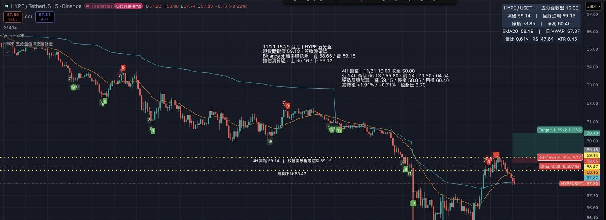
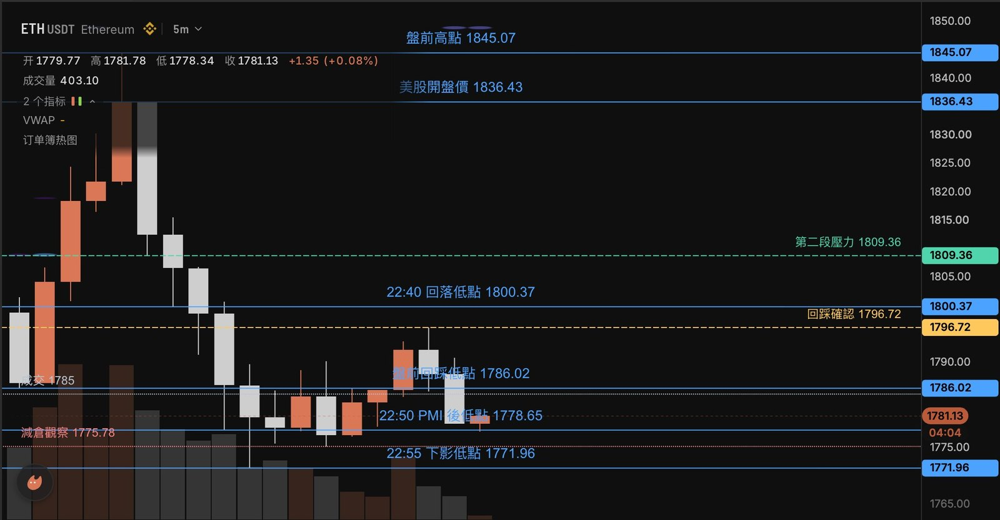
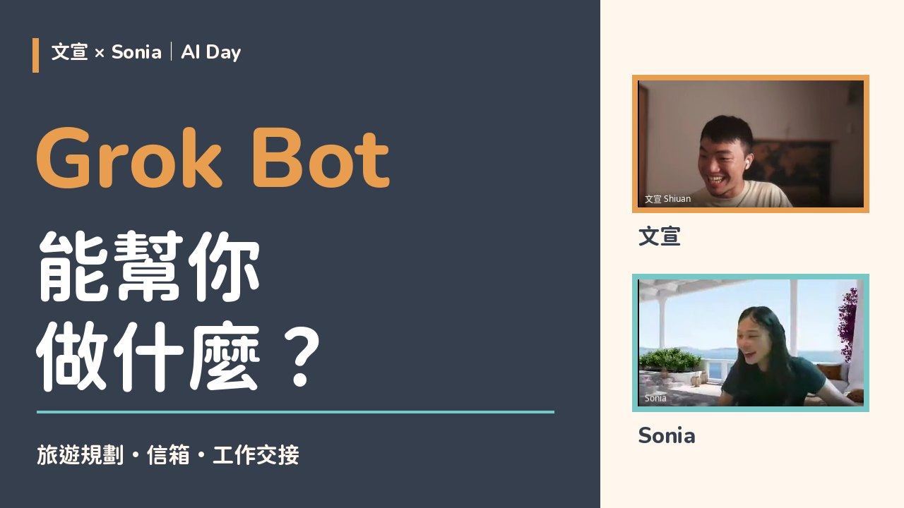
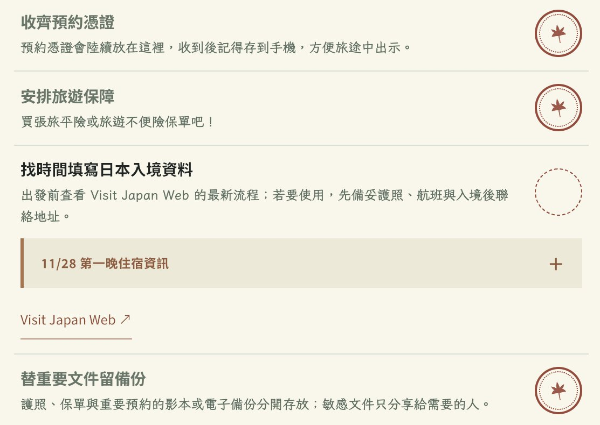

打卡之後 · AFTER WORK
下班後，
我用 AI 做的三件事
看盤、剪片、排旅遊，三件都是我自己的生活。
文宣 × Codex ｜ 磊山社團課 2026.11.27
你們上課說過、作業寫過的兩句話
「每天可以看，通知我知道美元的匯率的走勢」10/2 社團課，一位同學
「AI真的強到太可怕了，這兩天幾乎每天五小時容量連續用完…實在太過癮了」作業 #2，一位同學
今天這堂，我分享自己下班後拿 Codex 做的事。
我下班後拿 Codex 做的五件事
- 1看盤：請它陪我盯走勢、幫我挑毛病今天講
- 2剪片：線上直播錄完，交給它跟剪映今天講
- 3整理會議紀錄第一堂教過了
- 4排旅遊：家族旅行、朋友出國今天講
- 5匹克球部落格網站下課想聽再抓我
今天挑你們最可能用到的三件。
01 看盤
請 AI 陪我盯盤
11/21 到 11/25 這五天，我把看盤交給 Codex 一起做。
以下是我自己的學習紀錄，不構成投資建議。AI 負責看圖、畫線、算數字、給參考；要不要買、什麼時候買，都是我自己決定，它沒有幫我下單。
成果
這張圖上的框、線和筆記，都是 AI 畫的

成果
五天裡，它幫我做了這些
它就自己停下來，因為我睡著了
盯一次盤，回報給我：觀察、建議進場點、停損停利
一個月的資料，一句話就拿來模擬「當時照這個方法做會怎樣」
我買進後問它，它說太早了。
當天晚上，價格真的大跌。
我有沒有聽它的？最後揭曉。
為什麼重要
下班才有空看盤。
一個人看圖，只看得到自己想看的
每 5 分鐘回報一次，我可以去忙別的；我睡了它就停。
我請它「批判性思考」，它就要找我這筆單的問題。
下單前請它算：最多賠多少、可能賺多少。
三個詞先講好：以太幣＝一種 24 小時交易的加密貨幣 前低＝最近一次跌到的最低價，像地板 停損＝買之前先決定跌到哪裡就賣
我怎麼做
四個步驟，都是邊用邊講出來的
用我原本的看盤網站
TradingView 我本來就在用。它提議另外做一個看板，我說不要，直接在我的圖上畫。
嫌它，直到看得懂
五條線太亂，我說「太多線了」。最後只留進場、停損、停利。
設好提醒，讓它盯
每 5 分鐘看一次；連兩次沒回應就自己停。
做順了，存成專案
請它把當天的討論整理成一個專案，下次一句話叫回來。

 ⇆
第一版：五條線改完：兩條
⇆
第一版：五條線改完：兩條
拖曳中間的橘線比對（或按 B）
我怎麼做
它畫了五條線，
我只回一句
盈虧比：可能賺的空間 ÷ 可能賠的空間。數字越大，這筆越划算。
用在哪裡
有走勢圖的東西，都能這樣問
美元匯率
上課有同學說想要每天通知。
台股、ETF
收盤後看一眼，請它講支持和反對的理由。
基金淨值
手上的基金最近在漲還是在跌、為什麼。
黃金
想買之前，先請它當反方。
怎麼開始
今晚就能試：組一句話，複製貼上
每天早上 8 點，幫我整理的走勢，先列支持跟反對的理由，再說你的判斷。
守則：請你當反方，直接講風險在哪。資料附來源，不確定就說不確定。
「請你當反方」這句，等一下你就知道為什麼要加。這是給自己看的，不拿來當給客戶的建議。
真實對話 1／3
第一句話，我連要用哪個軟體都不知道
真實對話 2／3
週一晚上 11 點，我買了以太幣，
然後問它：我這筆買得好嗎？

真實對話 3／3
它在圖上畫了一條地板
我有聽它的。
它畫的地板，就是我的停損線
真的跌破，照計畫出場
它一畫出地板，我就把停損設在那裡。當天晚上跌破時照計畫出場，沒有被套住。
下次也先這樣問
請你當反方，直接講風險在哪。
就是剛剛積木裡那句守則。
買房、買車、換工作前，也可以先請它當反方。
02 剪片
直播錄完，
後面那一串交給它
Google Meet 錄影 → 剪映 → YouTube。
剪映：免費剪片軟體，手機、Mac、Windows 都有。
成果
一支一小時的錄影丟進去，出來七樣東西
10/24 到 10/26，來回幾輪做出來的。
成果
它交給我的是剪映檔，打開就能接著改
 每一段文字都在時間軸上，可以改
素材、Logo、配樂都放好了
每一段文字都在時間軸上，可以改
素材、Logo、配樂都放好了
畫面是另一支球拍短片的剪映檔，同一套做法。
為什麼重要
錄完只是一半。
有字幕、章節、縮圖，別人才會點開、看得完
剪掉開頭等人、結尾閒聊
上字幕、分章節
做縮圖、寫標題和說明
寫 LINE 分享文、整理提問
這些它先做。我只在剪映裡做最後的判斷。
我怎麼做
我在中間，前後都交給它
Codex 先剪
聽完整支、上字幕、剪掉頭尾。螢幕滿版，右下角放圓形人像。
交剪映檔
字幕、畫面、標題分開放，打開就能改。
我在剪映改
只做最後的判斷：留哪段、字幕順不順。
Codex 包裝
標題、說明、章節、縮圖、LINE 分享文、問答整理。

縮圖我請它用影片裡的真人截圖，不要 AI 重畫臉，字體也照我指定的。
 ⇆
Codex 初剪Sonia 改完
⇆
Codex 初剪Sonia 改完
一支球拍短片，同一個第 5 秒。拖曳比對（或按 B）
我怎麼做
同一秒，你第一眼
看到球員，還是字？
Codex 初剪的文字片段
Sonia 改完剩下的文字片段
七段畫面和剪接點都用 Codex 剪的。Sonia 改的是字和畫面大小。
用在哪裡
你手機裡那些沒整理的影片
小孩表演
剪掉等待，留下上台那幾分鐘。
家族旅遊影片
上字幕、配音樂，傳到家族群組。
線上說明會、讀書會
分章節，沒到的人也能跳著看。
社團活動
做一支精華，加一段分享文。
怎麼開始
今晚就能試：挑一支影片，組一句話
這支幫我，給看。
守則：做完先列出你改了哪些地方，我看過再定稿。
真實對話 1／2
指令很口語，我就是邊看邊講我要什麼
做順一次，就請它寫成 SOP（固定做法），下一次它照著做
真實對話 2／2
標準我來講，它照著改到好
03 旅遊
四個人一起出國，
行前清單放哪裡？
我請 Codex 做了一個旅行網站。
成果
行前清單做成闖關，
完成一項蓋一個楓葉章
清單裡有一項，你們一定最熟：
「安排旅遊保障：
買張旅平險或旅遊不便險保單吧！」

為什麼重要
行程在 LINE、訂房在信箱、機票在截圖。
出發前，總有人問「那個放哪？」
所有人看同一份，不用在群組裡翻。
幾個地方攤開比，全家一眼看懂。
要的不一樣，它會一起排進去。
 ？
？
我怎麼做
年底的家族旅行，
猜猜我們家選哪裡？
宿霧＋邦勞。爸爸跟我能打球，媽媽跟哥哥能放空，台北直飛約 3 小時。
後來爸媽改買了 1/4 出發的機票，行程又重排了一次。圖上是當時的版本，價格是 9/5 查的估算。
我怎麼做
三個動作，從一句話到一張圖
先講每個人要什麼
爸爸跟我想打球，媽媽和哥哥想放空。這些限制先講清楚。
要它做成能分享的成品
比較圖、行程海報、旅行網站，丟到群組大家就看得懂。
不喜歡就直說
第一版是日式雜誌風，我說要像旅行社廣告、放真實照片。
用在哪裡
一群人要一起決定的事，都能先丟給它
家族旅行
每個人要的不一樣，比較圖一張搞定。
帶爸媽出國
走路少一點、休息多一點，請它排進去。
朋友出國
做一個行前清單網站，誰沒準備好一看就知道。
聚餐、慶生
群組意見貼上，請它整理出兩三個選項。
怎麼開始
今晚就能試：家族群組吵不完的行程，先丟給它
我們想在出國，幫我比較地點，做成一張可以丟到群組的比較圖。
守則：價格寫明是估算和查詢日期，還沒確定的寫「待確認」。
手機 ChatGPT 就能做比較圖。想做成關西那樣的網站，再用 Codex。
真實對話 · 年底家族旅行的規劃
普吉島的機票一直沒出來
三件事，我都用這四個動作跟它講話
先講卡在哪
「普吉島的機票一直沒有出來」
不喜歡就直接嫌
「太多線了，沒意義」
「這樣不行，你要做得像是旅行社廣告」
用自己的標準驗收
「實際打開接手編輯，不要只驗證檔案」
做順了就存起來
「請你把我們今天的討論整理成一個新的專案」
這四句，明天你也能照著講。
另外兩件，下課想聽再來抓我
錄音丟進去，出來會議紀錄和下一步。你們第一堂就做過。
排程找最新影片 → 寫成文章上架 → 做成字卡、發 LINE 社群 → 辦訓練營、開箱球拍。
今晚下班之後
挑一件生活裡的麻煩，
丟給它試試看
做出來了，傳到群組給我看。